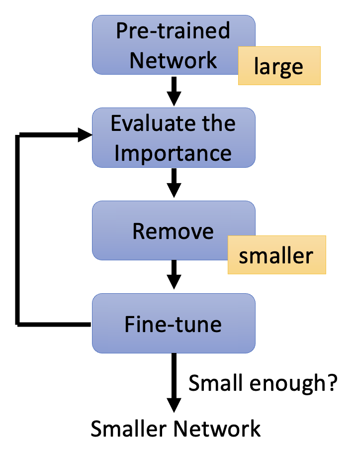
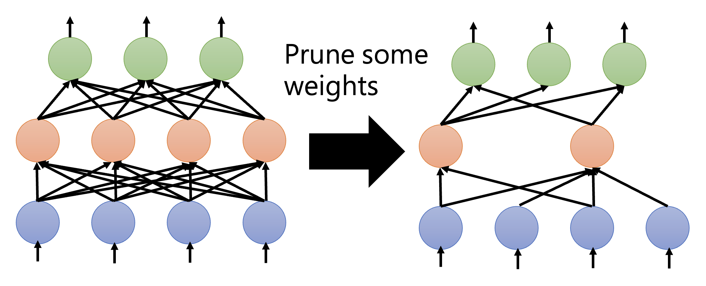
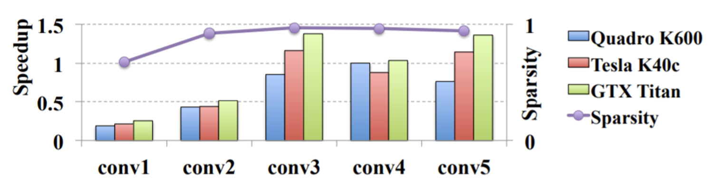
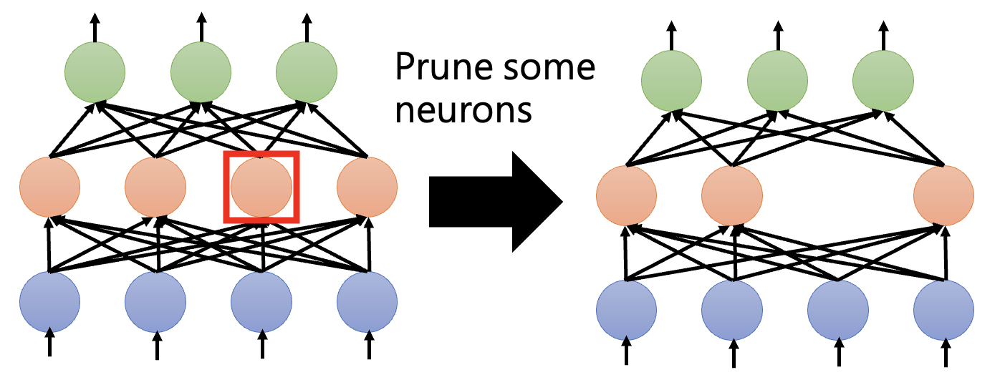
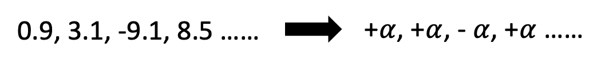
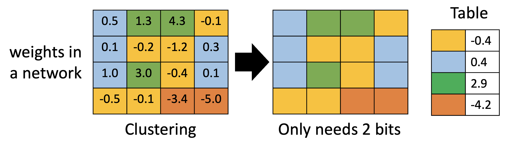
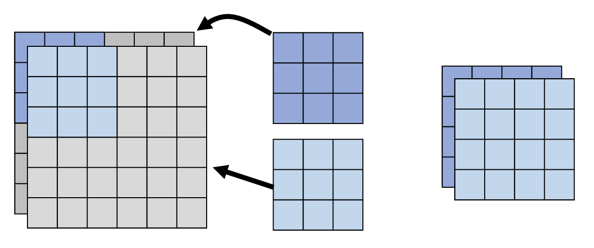
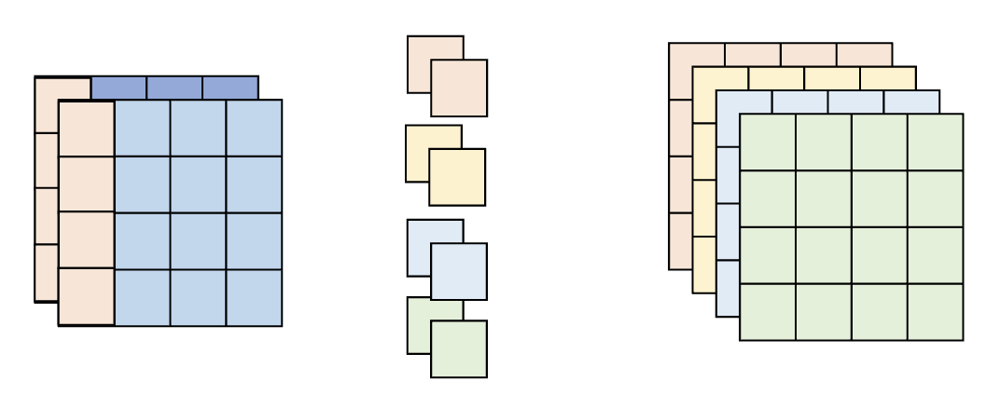
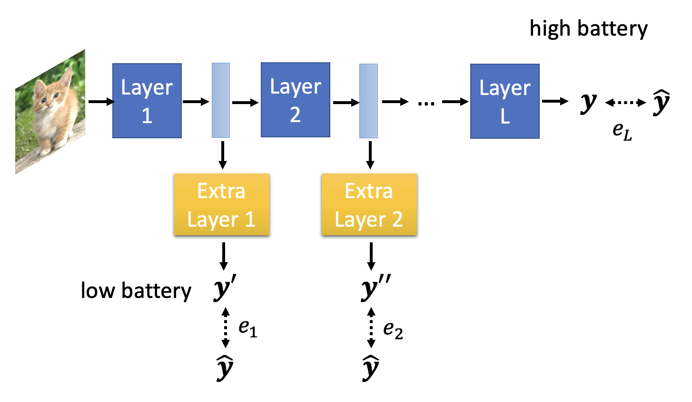
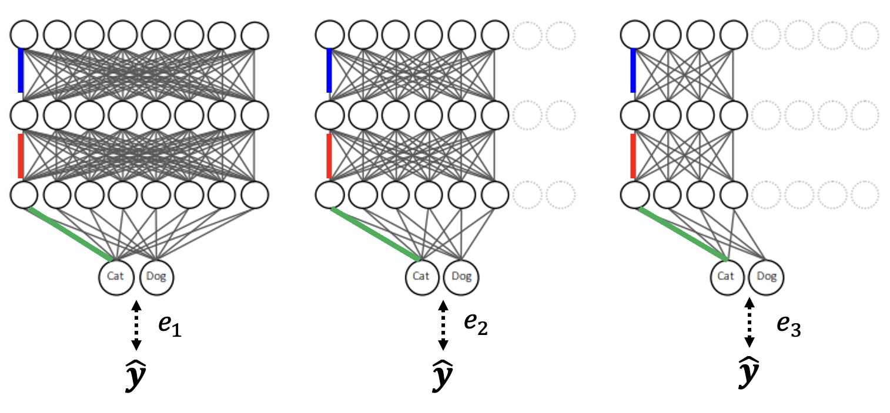

Network Compression⚓︎
约 2834 个字 预计阅读时间 14 分钟
有时，像 BERT 这么大的模型不是我们想要的，可能更小（参数量）的模型发挥更大的用处，比如将模型部署在资源受限的环境中（智能手表、无人机等
注意
本讲介绍的这些技术都是软件层面上的，硬件层面的技术不在本讲的介绍范围内，感兴趣的读者可自行查阅相关资料。
Network Pruning⚓︎
第一种技术叫做网络剪枝(network pruning)。该技术的可行性来源于一个观察：网络存在过参数化(over-parameterized) 的问题，即网络上有大量权重或神经元的冗余，那么它们就可以被剪掉。
注
早在 1989 年的 NIPS 上，杨立昆等人已经在研究网络剪枝的问题了。

网络剪枝的大致过程如下：
-
对于一个规模较大的预训练网络，评估其权重 / 神经元的重要性，然后去掉那些不重要的权重 / 神经元
- 权重的重要性：绝对值、life long...
- 神经元的重要性：对于给定数据集，非 0 的次数
-
剪枝后，模型的精度会有所下降（但期望不要下降太多）
- 让剪枝后的模型在训练数据上进行微调，以恢复精度
- 注意不要一次剪太多，否则上述恢复操作就没有效果了
下面来比较权重剪枝和神经元剪枝的细节：
-
权重剪枝
- 这种剪枝的问题是：剪枝后的模型架构不规整，不仅难以实现（现有的函数库（比如 PyTorch）不太支持这种情况
） ，GPU 加速也会变得困难（阻碍矩阵运算） -
下图展示了权重剪枝的效果
- 紫色曲线图对应稀疏度 (sparsity)，即多少比例的参数被剪掉了；可以看到只保留了 10% 不到的参数，而且精度也几乎保留了下来（不过图中没表示出来，实际只降了 1-2% 左右）
- 柱形图对应加速比大小，低于 1 的表示速度变得更慢，可见大多数模型在剪枝后速度反而变得更慢了
- 这种剪枝的问题是：剪枝后的模型架构不规整，不仅难以实现（现有的函数库（比如 PyTorch）不太支持这种情况
-
神经元剪枝：由于剪枝后架构仍然规整，因此权重剪枝缺点的反面正是神经元剪枝的优点

Why Pruning?⚓︎
也许读者会问：既然我们能让一个大模型变成小模型还能保持差不多的精度，那么为什么不直接训练一个小模型，这样不是更省力吗？但是研究表明，直接训练一个小模型相比大模型更难训练成功，反过来说就是大模型更容易被优化。而这个“研究”给出的结论叫做彩票假说(lottery ticket hypothesis)，它的大致思想是：我们可以把一个大模型看作多个堆叠起来的小模型，那么训练一个大模型就相当于训练多个小模型。一个小模型相当于一张彩票（共同点就是都很玄学 (bushi)
上面只是用一个浅显的比喻来简单认识了一下，接下来将从实验角度来说明这一假说的合理性。先对一个大模型的参数进行随机的初始化，然后通过不断训练得到更新后的模型，接着对该模型进行剪枝，得到一个小模型。神奇的地方在于，如果对小模型的参数进行随机初始化，那么这个小模型就训练不起来；但如果让小模型沿用一开始大模型用的随机参数初始化，那么模型就能训练起来。
由于彩票假说非常知名（得了 ICLR 2019 的最佳论文奖
- 第一种是训练前后绝对值差距越大，剪枝后的网络表现仍然不错
-
第二种是只要不改变初始权重的正负号，剪枝后的网络依然有效
 -
还有一个发现是网络中存在某个子网络，只要将它单独拿出来（剪枝
） ，连训练都不用（随机参数） ，得到的小网络就是一个好的网络- 在这篇研究之前已经出现了相关研究（Weight Agnostic Neural Networks）
还有一篇研究质疑彩票假说，标题为 Rethinking the Value of Network Pruning。它发现从头开始训练一个小模型是 OK 的，甚至可以得到更棒的结果，如下表最后一列所示（用大模型的随机化初始参数来初始化小模型的
另外该研究指出了彩票假说的局限性：只有在学习速率较小，且剪枝不规整（即对权重剪枝）的时候，彩票假说才是生效的。
Knowledge Distillation⚓︎
第二种方法叫做知识蒸馏(knowledge distillation)，它的大致思路是：称大模型为老师，并称小模型为学生，让学生学习老师的训练成果，即让学生的输出和老师的输出（一个分布）之间的交叉熵最小化。无论老师的输出对错，学生照学不误。
个人感觉这有点像监督学习，老师的输出相当于一个标签或基准事实。
老师网络不一定是一个大网络，也可以是由多个网络组装(ensemeble) 起来的网络
知识蒸馏中会用到的一个小技巧是稍微修改一下 softmax 函数：将原来的计算公式 \(y_i' = \dfrac{\exp(y_i)}{\sum_j \exp(y_i)}\) 改为 \(y_i' = \dfrac{\exp(y_i / T)}{\sum_j \exp(y_i / T)}\)。引入 \(T\) 的意义是让原来比较集中的分布更加分散些，因为如果分布过于集中的话，学生学到的东西就和正确答案没什么不同了，但我们希望学生要学到老师的知识。
例子
假设 \(T = 100\)
相关研究：
Parameter Quantization⚓︎
第三种技术叫做参数量化(parameter quantization)，具体方法有：
- 用更少的空间表示参数（比如将 64 位压缩到 32 位）
-
权重聚集(weight clustering)：将网络中值相近的权重视为同一群权重，这群权重的值设为它们的平均值，这样就可以用更少的权重值表示整个网络的权重
 -
使用更少的位表示经常出现的群，用更多的位表示不怎么出现的权重
- 类比哈夫曼编码(Huffman encoding)
更激进的做法是只用一个位表示权重，即二进制权重(binary weight)，权重只有 +1 和 -1。下面是一些和二进制权重相关的研究：
Architecture Design⚓︎
下面将以 CNN 为例考虑如何通过架构设计来压缩网络规模。先给出标准 CNN 的示意图（包括输入、滤波器和输出
接下来介绍一种叫做深度可分离卷积(depthwise separable convolution) 的技术，它的实现步骤如下：
-
按深度卷积：
- 滤波器的数量 = 输入通道数
- 每个滤波器只考虑一个通道上的内容
- 滤波器是 \(k \times k\) 的矩阵
- 通道之间没有交互（所以每个滤波器得到的结果是独立的）
-
按点卷积：
- 为获取通道之间的信息，还需用一些滤波器对所有通道进行扫描
- 滤波器是 \(1 \times 1\) 的矩阵
现在来比较标准 CNN 和深度可分离卷积用到的参数数量。令 \(I, O\) 分别为输入通道和输出通道的数量，\(k \times k\) 为滤波器的大小。
- 标准 CNN：\((k \times k \times I) \times O\)
- 深度可分离卷积：\(k \times k \times I + I \times O\)
两者相除，得到：\(\dfrac{k \times k \times I + I \times O}{(k \times k \times I) \times O} = \dfrac{1}{O} + \dfrac{1}{k \times k}\)。由于 \(O\) 通常会比较大，因此压缩比就是 \(\dfrac{1}{k^2}\)，也就是和滤波器的大小有关。
下面来解释这个技术的有效性。在深度可分离卷积出现前就有一种叫做低秩近似(low rank approximation) 的方法来减少网络参数。假如某一层有 \(N\) 个输入和 \(M\) 个输出，且 \(M > N\)（反过来也没问题，不过 PPT 是这样假设的
例子（用低秩近似解释深度可分离卷积）
更多相关技术：
Dynamic Computation⚓︎
最后一种技术是动态计算(dynamic computation)。顾名思义，有时网络需根据实际情况动态调整所需的计算资源，比如在不同设备，或在同一设备下根据电量高低采用不同量的计算资源。也许读者会想训练一组不同的模型，以应对各种情况。但模型数量一多，占据空间就太大了，所以我们更希望模型能根据情况自由调整需求。
动态计算的方法有：
-
动态深度
- 如果计算资源充足的话（高电量
） ，就让模型跑完所有层；如果计算资源不足，则就让模型跑到某一层就结束了，将这层的输出经过一个额外的层后就拿来作为最终结果 - 损失函数 \(L = e_1 + e_2 + \dots + e_L\)，也就是说训练的时候要考虑每一层的损失
- 应用：Multi-Scale Dense Network(MSDNet)
- 如果计算资源充足的话（高电量
-
动态宽度
- 和上一种方法类似，但是减少的是每层用到的神经元个数
- 损失函数 \(L = e_1 + e_2 + e_3\)
- 应用：Slimmable Neural Networks
上述两种方法的一个共同点是宽度 / 深度的选择权还是在人类手中。对应地，存在由模型自己决定宽度 / 深度的方法，比如下面这种根据样例难度来计算的方法：
相关技术：
- SkipNet: Learning Dynamic Routing in Convolutional Networks
- Runtime Neural Pruning
- BlockDrop: Dynamic Inference Paths in Residual Networks
评论区